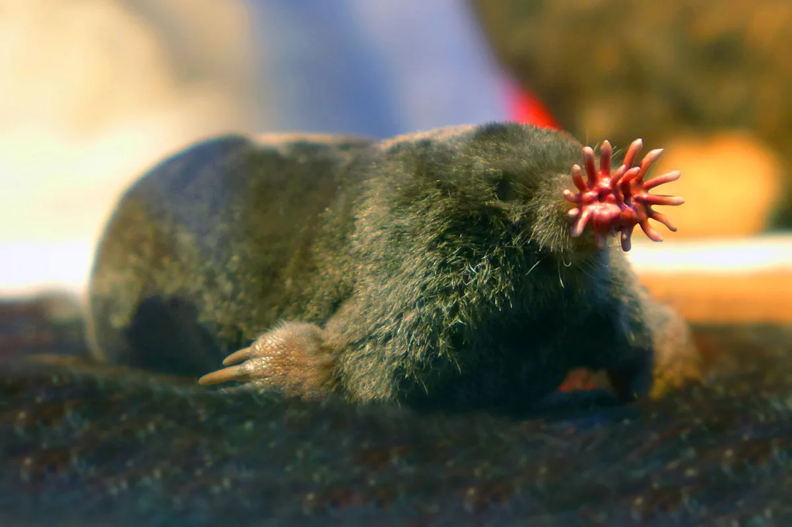
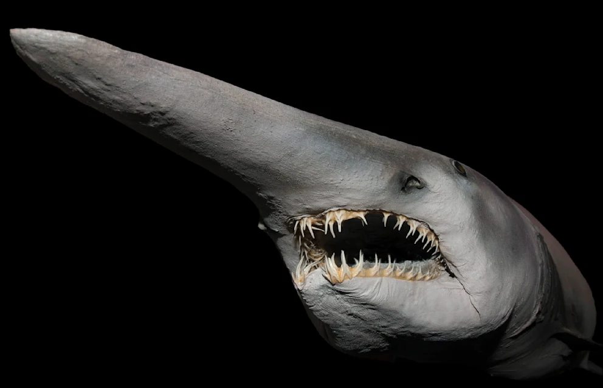

The glass frog (family Centrolenidae) is a small, arboreal amphibian found in Central
and South American rainforests, notable for its translucent skin on the
belly that allows its internal organs, including its beating heart, to be seen.

The star-nosed mole (Condylura cristata) is a unique semi-aquatic mammal from North
America, instantly recognizable by the ring of 22 pink, fleshy tentacles around its snout,
which it uses as an ultra-sensitive touch organ to detect prey with incredible speed.

The goblin shark (Mitsukurina owstoni) is a rare, deep-sea shark
recognizable by its distinctive, elongated, flattened snout and highly protrusible jaw.